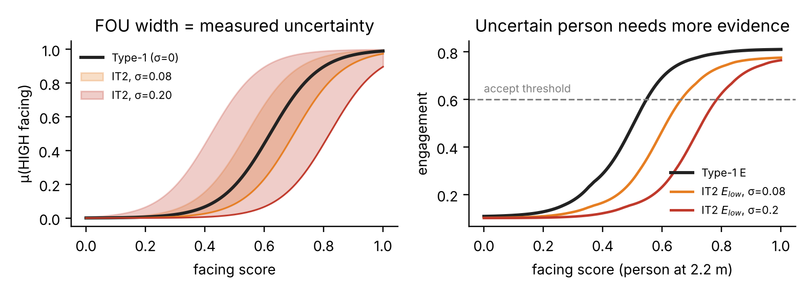

01The problem
Gesture-controlled robots react to any hand that moves. In a crowd, a bystander waving at a friend can stop or start the robot by accident. Current pipelines classify the hand but never ask whose hand it is, or whether that person is even talking to the robot.
{{FRAME_CAP}}
OUR IDEA
Only trust a gesture from the person who is actually engaging with the robot — judged separately for every person in view.
GESTURE → COMMAND
Open palm → STOP · Fist → Forward · Call → Backward
One finger → Turn left · Two-up → Turn right
No accepted gesture for 0.5 s → robot stops
One finger → Turn left · Two-up → Turn right
No accepted gesture for 0.5 s → robot stops
02Method: two fuzzy layers per person
Sensor · Unitree Go2 front camera, streamed to a laptop over WebRTC
↓
Per-person pose + tracking
MediaPipe multi-person pose → ID, distance (monocular), approach speed, facing (head + body yaw), each ± measured σ
MediaPipe multi-person pose → ID, distance (monocular), approach speed, facing (head + body yaw), each ± measured σ
Hand → person → gesture
Hands matched to bodies by wrist → 18-class MLP gesture + confidence, smoothed per person
Hands matched to bodies by wrist → 18-class MLP gesture + confidence, smoothed per person
↓
Layer 1 · Engagement E = f(distance, approach, facing)
↓
Layer 2 · Decision act ⇔ Elow ≥ θ(cmd) ∧ conf ≥ θc
↓
Several accepted at once → STOP wins, else most engaged · Move / StopMove
From Type-1 to Interval Type-2 fuzzy logic

IT2 band width = this person's measured uncertainty, every frame. Acting on Elow means a hard-to-see person needs more evidence. σ = 0 ⇒ IT2 ≡ Type-1.
03Results
{{STATS}}
Bystander false triggers / commander recall
{{TABLE}}KEY FINDING
{{KEY}}
{{FIG_CAP}}